EVAL-ESS1-SYS
Scalable BMS Kit for Cell and Pack Monitoring
Introduction
The EVAL-ESS1-SYS Solution Kit contains all the necessary building blocks to create a complete BMS solution stack. The package includes one application processor (AD-APARD32690-SL), one dual isoSPI adapter (EVAL-ADBMS6822), two 16-cell battery monitors (EV-ADES1830CCSZ), two 16-cell battery emulators (DC2472A), and one battery pack monitor (EVAL-ADBMS2950-BASIC).
The accompanying PC-based graphical user interface provides an intuitive interface that allows the user to configure the BMS signal chain components and view cell and stack voltage and current measurement results.
This page is intended to be used as a getting started guide only. This summarizes the key steps required from setting up the hardware and software to taking basic current and cell voltage measurements. Further hardware guidance and details can be found in dedicated evaluation board user guides included in the EVAL-ESS1-SYS package and listed in the table below.
Evaluation Kit Contents
The following is a complete list of contents that are in the EVAL-ESS1-SYS kit:
ITEM |
QTY |
DESCRIPTION |
|
|---|---|---|---|
Boards |
AD-APARD32690-SL |
1 |
Arduino Form-factor Development Platform based on MAX32690 ARM Cortex-M4 Microcontroller |
MAX32625PICO with 10-pin SWD Cable |
1 |
Programming/debug adapter for the AD-APARD32690-SL. Please refer to MSDK User Guide - Analog Devices MSDK Documentation |
|
EVAL-ADBMS6822 |
1 |
Arduino Form-factor Development Platform for ADBMS6822. Mates with AD-APARD32690-SL |
|
EV-ADES1830CCSZ |
2 |
16-cell battery monitor board featuring the ADES1830 |
|
DC2472A + harness to EV-ADES1830 |
2 |
Modified version of DC2472A 16-cell battery emulator. Plugs into EV-ADES1830CCSZ to emulate a 16-cell battery |
|
EVAL-ADBMS2950-BASIC (Rev2.0) |
1 |
Battery pack monitoring evaluation board featuring the ADBMS2950B, a bidirectional current monitor |
|
Cables |
RJ45-to-RJ45 |
1 |
Used to connect EV-ADES1830CCSZ to EV-ADES1830CCSZ |
DuraClik-to-DuraClik cable |
1 |
Used to make isoSPI connection from EVAL-ADBMS6822 to EVAL-ADBMS2950-BASIC |
|
DuraClik-to-RJ45 Cable |
1 |
Used to make isoSPI connection from EVAL-ADBMS2950-BASIC or EVAL-ADBMS6822 to EV-ADES1830CCSZ |
|
USB Type A-to-USB Micro-B |
3 |
Used to provide power to DC2472A & EVAL-ADBMS2950-BASIC and also for MAX32625PICO |
|
USB Type A-to-USB Type-C |
1 |
Data and power for AD-APARD32690-SL |
|
USB-to-T1L Ethernet Adapter Board w/Cable |
1 |
Option to evaluate 10BASE-T1L Ethernet capability on the AD-APARD32690-SL MCU board |
System Requirements
The system requirements include both hardware and software prerequisites. The following list of equipment are not provided as part of the kit but are required for running the tests documented in this guide. Additionally, the BMS Browser, a PC browser-based GUI tool, complements the EVAL-ESS1-SYS kit hardware. You’ll need a MyAnalog.com account to download it from the provided link.
Equipment Needed
Laptop or PC running Windows 10
A digital laboratory power supply similar to the 3631A
2x wall plugs to plug USB cable from DC2472A to provide power
Documentation Needed
ADES1830 data sheet
ADBMS2950B data sheet
ADBMS6822 data sheet
Software Needed
BMS Browser/Windows®-based graphical user interface program can be downloaded through BMS Browser GUI Broad Market
Note
When software updates or new versions of the software are available an email notification will be sent to the email address associated with the MyAnalog account used to download the original software package.
System Setup
Evaluation Software
The BMS Browser is a PC browser based Graphical User Interface (GUI) tool designed to work in conjunction with the hardware in the EVAL-ESS1-SYS kit. MyAnalog.com account will be required to download the BMS Browser GUI from below link:
BMS Browser GUI Installation
BMS Browser must be downloaded from MyAnalog as outlined above.
Double click on bms_browser_gui_broadmarket-relX.Y.Z.exe to install the GUI.
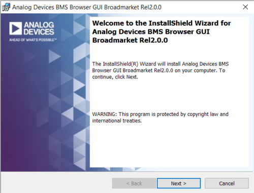Accept the license terms and click Next to proceed with the installation.
{kind=link}
{kind=link}
Default installation directory will be in C:\Analog Devices\
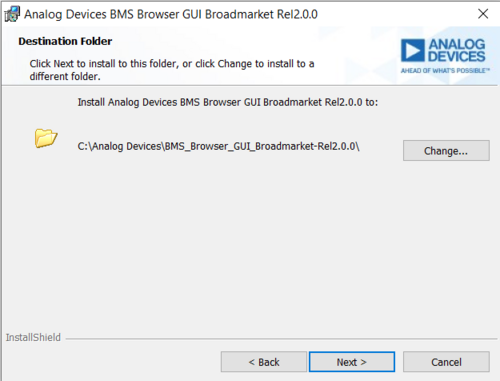
{kind=link}
MCU Configuration and Setup
Important
The MCU should be programmed with the correct firmware when received as part of the EVAL-ESS1-SYS kit. Only use this section if the firmware on the MCU board has been updated for other evaluation purposes.
The MCU should be programmed using the following steps:
MAX326825PICO Debugger (One-time setup)
Download the firmware file
firmware filefor the MAX32625PICO board.Consult the MSDK User Guide for detailed instructions on updating the MAX32625PICO Debug Adapter Firmware.
Plug in the MAX32625PICO board while holding the on-board button. A red LED should blink, then hold steady, and a MAINTENANCE drive should appear on your PC.
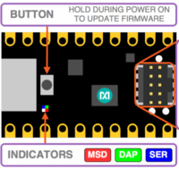Drag-n-drop the .hex file onto the MAINTENANCE drive. The file transfer should be complete in about 30 seconds.
Unplug and replug the device.
After completion, a DAPLINK drive should appear. You can drag and drop the firmware (.hex files separate from the above) onto it to program the AD-APARD32690-SL when the probe is properly connected.
Connect the MAX32625PICO to the AD-APARD32690-SL at P9, ensuring the correct 10-pin ribbon cable orientation.
Note
Not all MAX32625PICO Debuggers have a key lock on the ribbon cable connector.
Connect a USB cable from the AD-APARD32690-SL (via P10) to the PC.
Connect another USB cable from the MAX32625PICO to the PC.
A DAPLINK drive should appear in Windows Explorer.
Locate the firmware .hex file to be programmed on the MCU board in the installation folder of the BMS Browser GUI Broad Market under USB_TO_SPI_Firmware/AD-APARD32690.
Drag the usb-to-spi-max32690.hex file to the DAPLINK drive to flash the firmware needed by the BMS Browser GUI.
A normal copy progress dialog will appear. Once the progress bar is completed, the dialog window will close, and the DAPLINK drive will reconnect. The LED D5 of AD-APARD32690-SL should also be green at this moment.
You may disconnect both boards and remove the MAX32625PICO.
The AD-APARD32690-SL is now ready to be used with the other boards in the evaluation kit. If you are using this MCU board for other purposes, different firmware loads will be required, as this firmware version is only intended for use with the BMS Browser.
Launching the BMS Browser GUI
Open the BMS Browser GUI either by searching for it in the Start Menu or using the shortcut on the Desktop.
Run the application to launch the BMS Browser GUI.
Upon launching, a console window will appear to display background information.
Two new tabs will open in the default browser on the PC, with the User Guide tab as the default.
Switch to the alternative tab to access the BMS Browser configuration page.
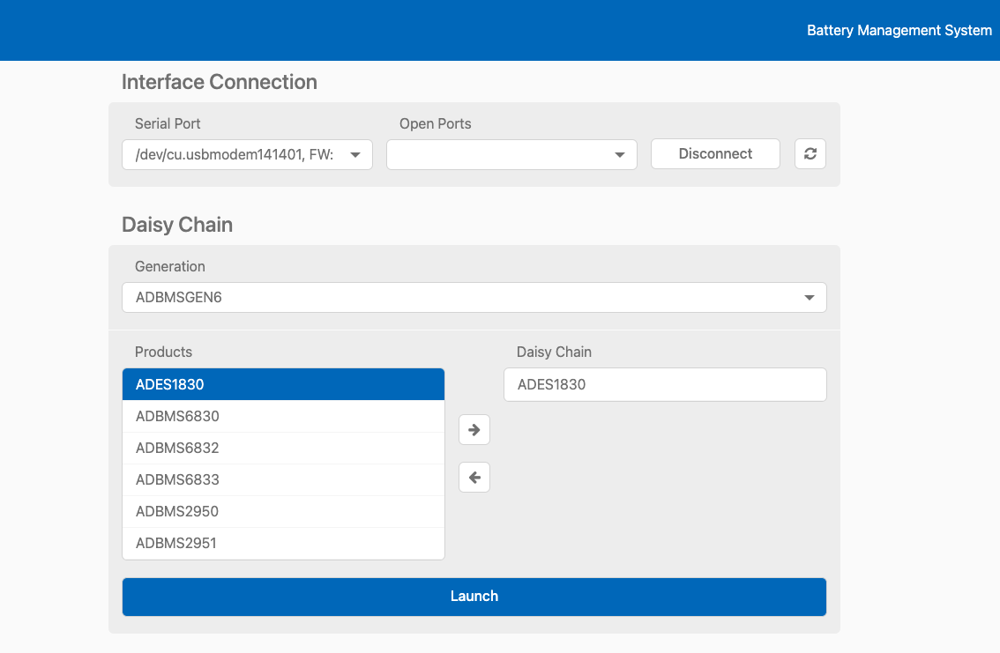Ensure that the AD-APARD32690-SL is connected to the PC via the USB-C cable on P10. The Blue LED, D31, will illuminate when powered.
In the Serial Port dropdown box, select the COM port associated with the AD-APARD32690-SL. The firmware version should be 1.0.
EV-ADES1830CCSZ Quick Test
Important
Do not attempt to discharge the cells using the EV-ADES1830 attached to the cell simulator. This will draw in too much current and will damage the ADES1830’s internal FETs. Instead, if balancing the board is the intention, connect power supply outputs to each cell input and discharge the switches that way.
Before setting up the entire signal chain, it is advisable to test and evaluate each board individually. The following instructions outline how to start taking measurements with the EV-ADES1830CCSZ.
Attach the EVAL-ADBMS6822 board to the AD-APARD32690-SL Arduino headers.
Use the DuraClik-to-RJ45 cable to connect the MAIN isoSPI port on the EVAL-ADBMS6822 to PORT A on the EV-ADES1830CCSZ.

Connect the DC2472A emulator board to the EV-ADES1830CCSZ using the provided 16-cell adapter cable.
Power the DC2472A using a 5V external source connected to J1 via the USB cable. While some laptop USB ports may suffice for powering the emulator during evaluation, it is still recommended to use an external power supply to ensure adequate power. The EV-ADES1830CCSZ is powered through the DC2472A.
With the hardware connected and the AD-APARD32690-SL connected to the PC, open the BMS Browser.
In the Interface Connection section, select the COM port associated with the AD-APARD32690-SL.
Under the Daisy Chain section, ensure the Generation drop-down box is set to ADBMSGEN6.
From the Products list, select the ADES1830, then click on the right arrow to add it to the Daisy Chain. Settings can remain as default.
Click Launch.
Upon launch, the Quick Measure tab will open. Note: this utility only supports a single BMS product in a Daisy Chain. Click Start Quick Measure to begin measurements.
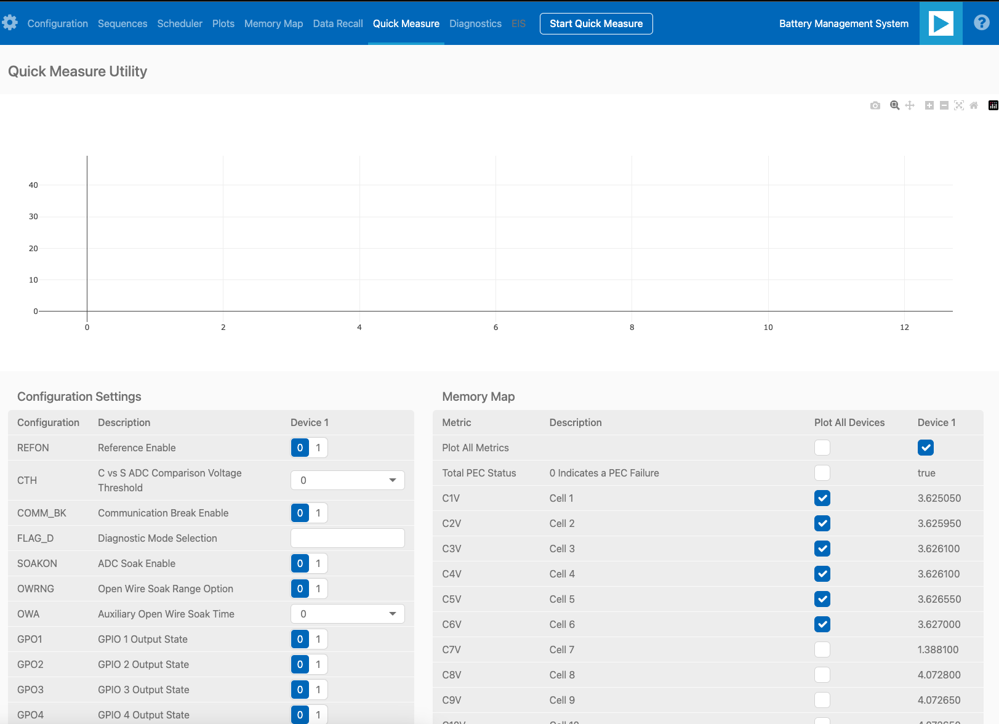Check the Total PEC Status on the 3rd row under the Memory Map. This indicates the status of the isoSPI link between the EVAL-ADBMS6822 and the EV-ADES1830CCSZ.
Ensure the EV-ADES1830FCCZ board is powered correctly, indicated by the Blue LED on the DC2472A being illuminated.
Verify the connection of the twisted cable between the EVAL-ADBMS6822 and the EV-ADES1830CCSZ.
Double-check the jumper settings on the EVAL-ADBMS6822 and its connection to the Arduino header on the AD-APARD3269-SL.
Check the voltage readings by adjusting the potentiometer (POT1) on the DC2472A to modify the emulated cell voltages. Monitor the voltage channels on the Quick Measure Utility graph. Select which signals to display on the graph under the Plot All Devices column.
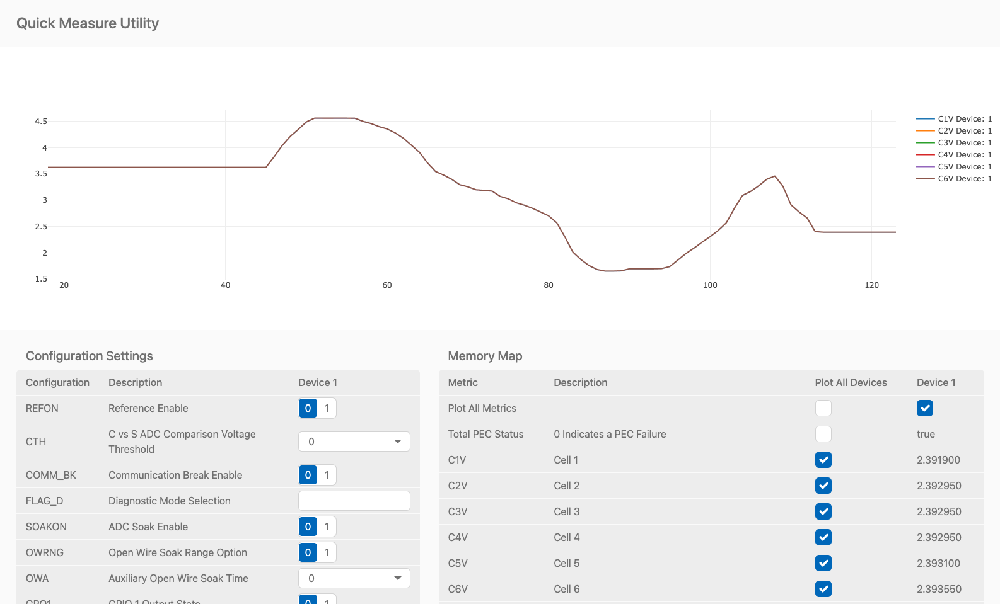
EVAL-ADBMS2950-BASIC Quick Test
The next part of this guide explains how to perform basic measurements with the EVAL-ADBMS2950-BASIC. You’ll need a benchtop power supply to create a current through the shunt resistor on the EVAL-ADBMS2950-BASIC.
Connect the isoA of EVAL-ADBMS2950-BASIC to J1 of the EVAL-ADBMS6822 using the provided DuraClik-to-DuraClik cable. Ensure the EVAL-ADBMS6822 is connected to the AD-APARD32690-SL as done previously and linked to the PC.

Choose between two options for powering the EVAL-ADBMS2950-BASIC:
Supply 5V to J1 and set the current limit to 200 mA. The EVAL-ADBMS2950-BASIC consumes <50 mA in idle mode and ~100 mA in active mode.
Alternatively, power it via a micro-USB cable connected to J10.
Attach a current source to the shunt using crocodile clips, ensuring the positive terminal connects to the bat- port and the negative terminal to the shunt- port. Note that crocodile clips are appropriate only for low currents, primarily for checking hardware functionality. For high current evaluations, consult the EVAL-ADBMS2950-BASIC User Guide.
Configure the power supply to generate a 5A current.
Open the BMS_Browser and select the correct COM port. Set ADBMSGEN6 in the Generation drop-down box. Then, add the ADBMS2950 from the product list to the Daisy Chain and click Launch.
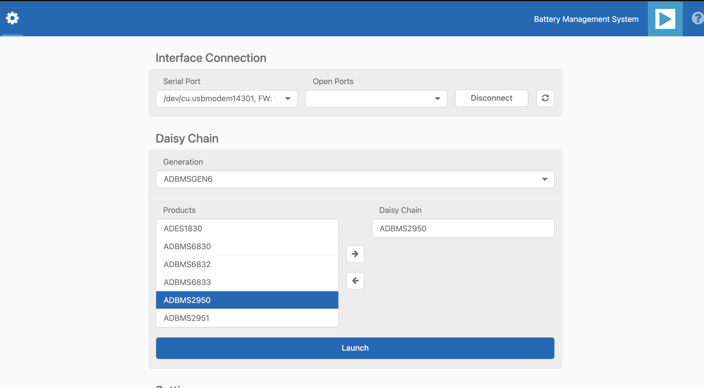After opening, the Quick Measure tab is available. Note: it can only handle one BMS product in a Daisy Chain. Click Start Quick Measure to begin.
Check the Total PEC Status to confirm a successful isoSPI link between the EVAL-ADBMS6822 and the EVAL-ADBMS2950-BASIC. If false, there is an error in the signal chain.
Confirm that the reference voltages for the ADBMS2950 are accurate. Scroll through the Memory Map section to check VREF2A, VREF2B, VREF1P25, etc. The anticipated values are indicated in the provided image.
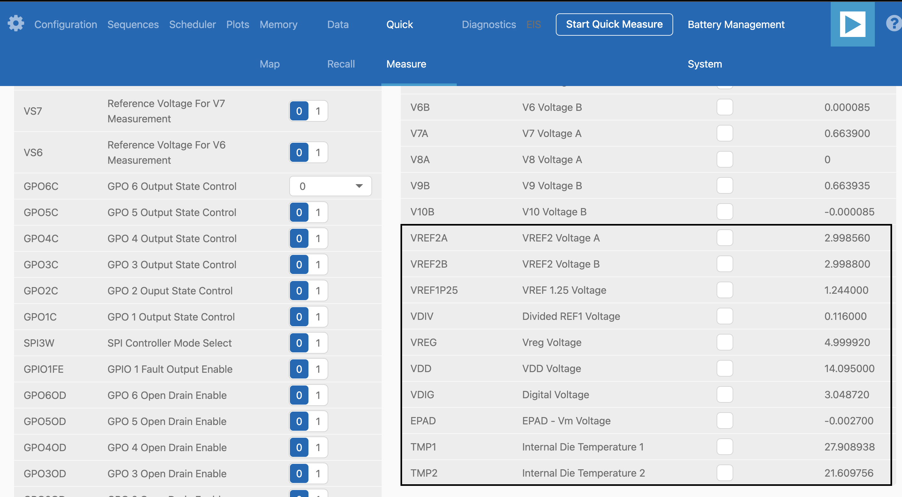Check the current through the shunt by selecting I1 ADC result in the Memory Map. With a 50 μΩ shunt resistor and a 5A current, the expected I1 ADC voltage is 0.00025. Adjust the current to 4.5A, resulting in an expected I1 ADC Result of 0.000225.
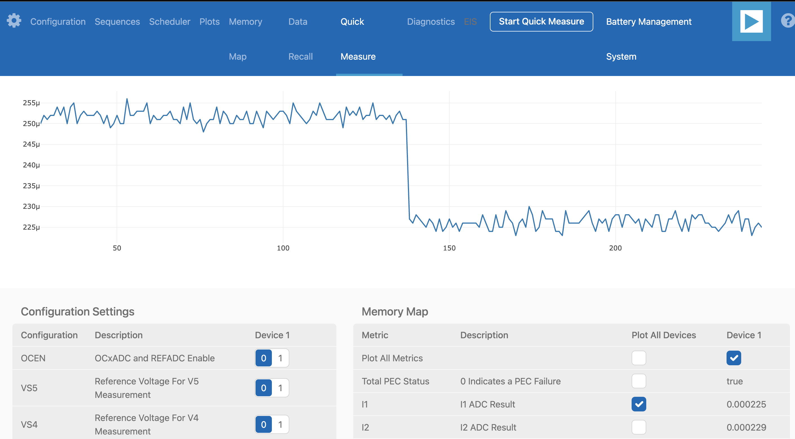
Complete Daisy Chain Test
Once familiar with the setup for each of the individual boards the entire signal chain can be verified.
Connect the hardware using the provided isoSPI cables. Power DC2472A boards using the USB cable connected to a wall plug. Power the EVAL-ADBMS2950-BASIC through either J1 or the USB connector, as explained earlier.

Launch the BMS Browser following the previous instructions and choose the appropriate COM port.
Set up the Daisy Chain according to the diagram provided. The EVAL-ADBMS2950-BASIC is positioned at the top, indicating it is the initial device on the chain, connected to the EVAL-ADBMS6822. The first EV-ADES1830CCSZ connects to the EVAL-ADBMS2950-BASIC using the DuraClik-to-RJ45 cable, while the second EV-ADES1830CCSZ is linked to the first one via the RJ45-to-RJ45 cable.
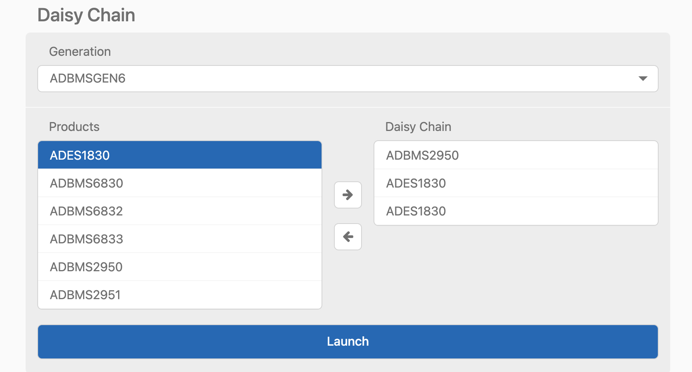Click on Launch to initiate the GUI. After the GUI launches in the Browser, go to the Sequences tab located in the top toolbar, which will open the Sequence Configuration page.
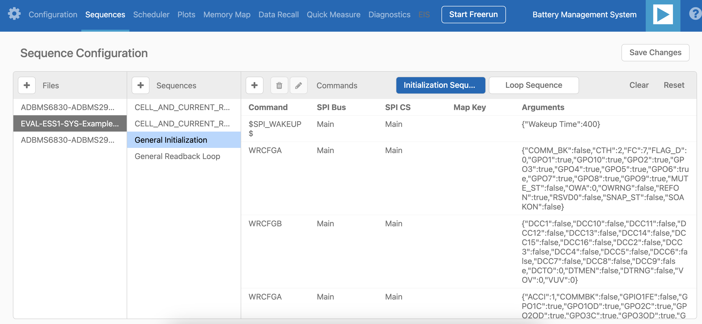In the Files column, select the EVAL-ESS1-SYS-Example.json. This action will load a preconfigured sequence into the tool.
Ensure that the steps are followed in the specified order.
Click on Initialization Sequence followed by General Initialization under the Sequences column to load the defined sequences from the EVAL-ESS1-Sys-Example.json file into the tool.
Next, select Loop Sequence and then click on General Readback Loop under the Sequences column. This action loads the loop sequence defined in the EVAL-ESS1-Sys-Example.json file into the tool.
Finally, click on Start Freerun to initiate the freerun mode.
During free run mode, the Initialization Sequence is performed once initially. Subsequently, the loop sequence continues to run continuously until the Stop Freerun button is clicked.
After activating freerun mode, navigate to the Memory Map tab. This section displays a numerical representation of the ongoing command loop. Additional details can be accessed in the GUI’s help section. The accompanying screenshot illustrates this output.
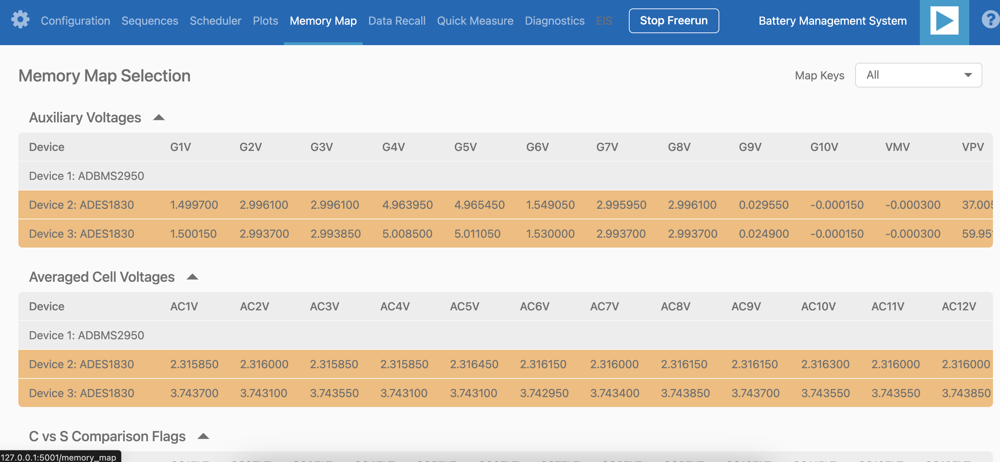The Plots tab allows for the visualization of parameters recorded during the command loop. It supports the creation of up to four plots simultaneously. In the configured Daisy Chain, the EVAL-ADBMS2950-BASIC is designated as Device 1, the first EV-ADES1830CCSZ as Device 2, and the third EV-ADES1830CCSZ as Device 3. An example illustrates how to plot each parameter separately: I1ACC and I2ACC on Plot 1, the average cell voltages for the first EV-ADES1830CCSZ on Plot 2, and the averaged cell voltages for the third EV-ADES1830CCSZ on Plot 3. Simply choose the desired Plot number from the dropdown menu under each device to display the relevant data.
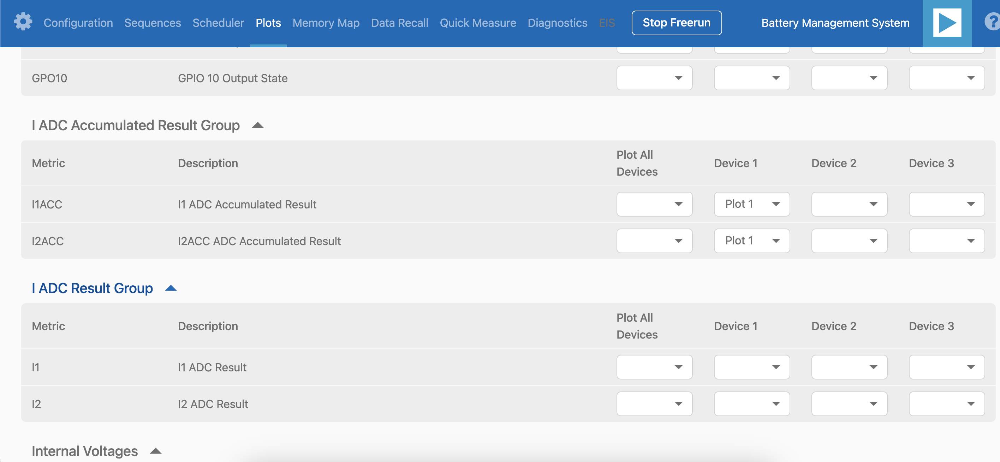 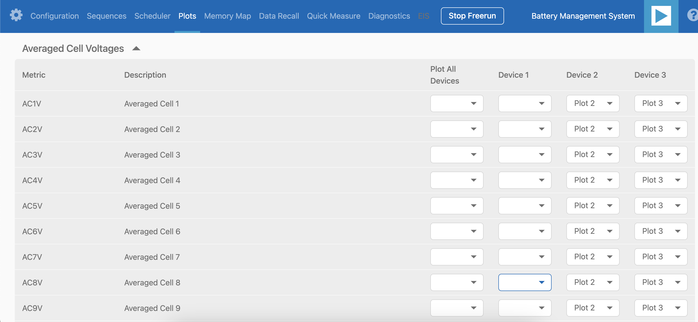 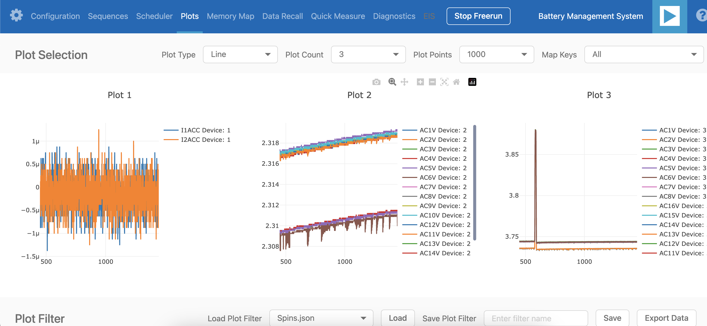Plot settings can be saved to the PC to be reloaded for future session to save time.
Help and Support
For questions and more information, please visit the Analog Devices Engineer Zone.
For internal support, you can raise a question or submit a ticket through our Jira Service Desk using the following link: BU Applications Technical Support.
For external users, please post your questions under the EngineerZone forum in EngineerZone to get assistance from the community and experts.